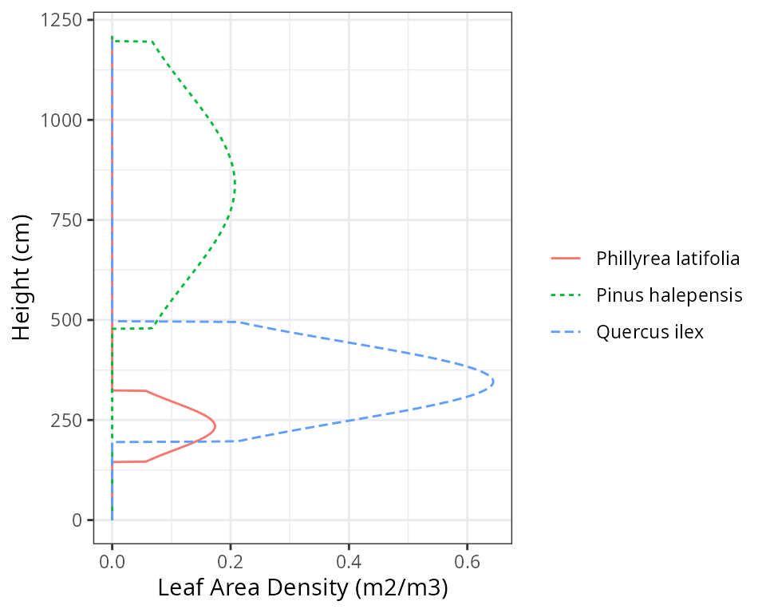
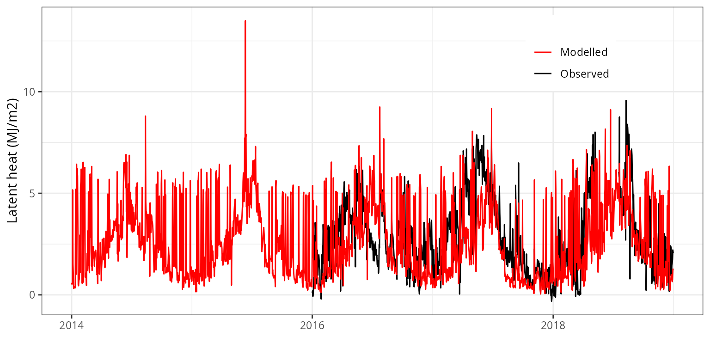
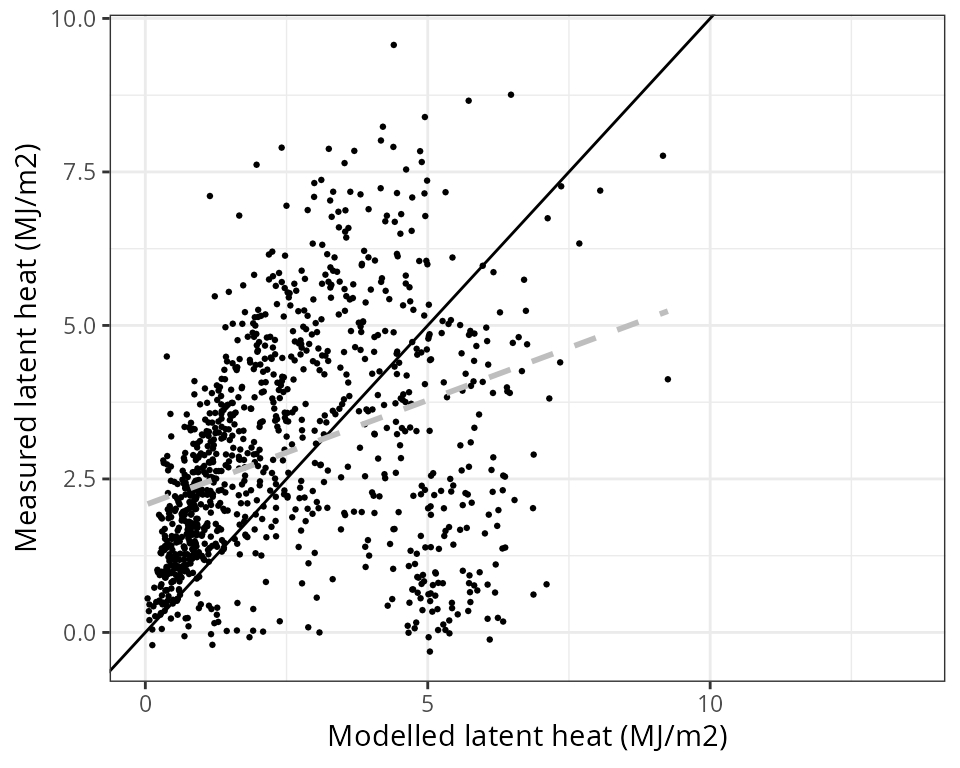
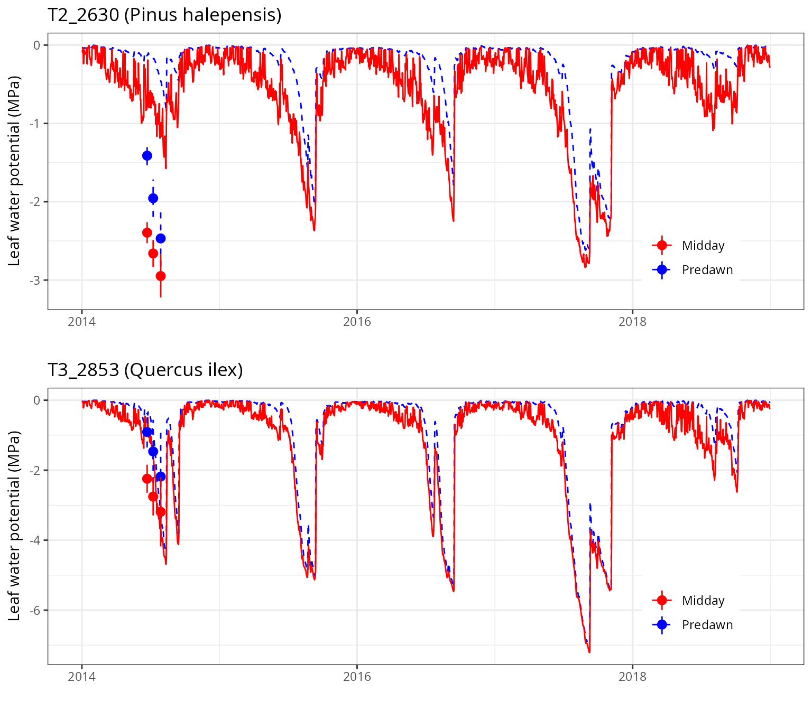
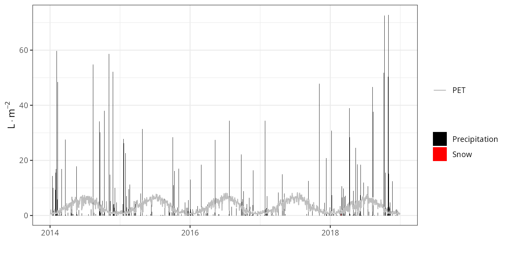
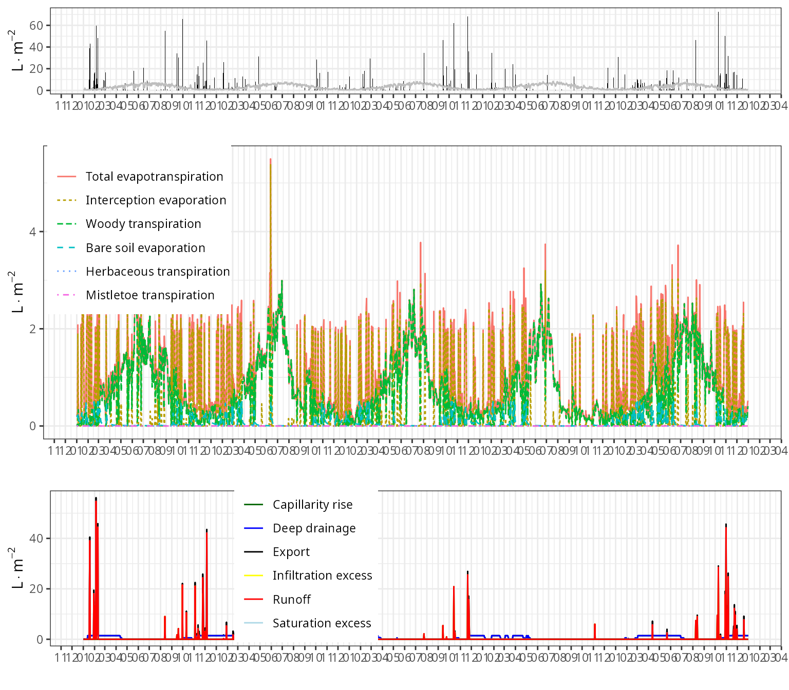

Soil and plant water balances at Font-Blanche
Miquel De Caceres (CREAF), Nicolas Martin-StPaul (INRA)
2026-09-03
Source:vignettes/workedexamples/FontBlanche.Rmd
FontBlanche.RmdIntroduction
About this vignette
This document describes how to run the water balance model on a
forest plot at Font-Blanche (France), using the R function
spwb() included in package medfate. The
document indicates how to prepare the model inputs, use the model
simulation function, evaluate the predictions against available
observations and inspect the outputs.
About the Font-Blanche research forest
The Font-Blanche research forest, located in southeastern France (43º14′27″ N 5°40′45″ E, 420 m elevation), is composed of a top strata of Pinus halepensis (Aleppo pine) reaching about 12 m, a lower strata of Quercus ilex (holm oak), reaching about 6 m, and an understorey strata dominated by Quercus coccifera but including other species such as Phillyrea latifolia. It is spatially heterogeneous: not all trees in each strata are contiguous, so trees from the lower stratas are partially exposed to direct light. The forest grows on rocky and shallow soils that have a low retention capacity and are of Jurassic limestone origin. The climate is Mediterranean, with a water stress period in summer, cold or mild winters and most precipitation occurring between September and May. The experimental site, which is dedicated to study forest carbon and water cycles, has an enclosed area of 80×80 m (Simioni et al. 2013) but our specific plot is a quadrat of dimensions 25x25 m.
Model inputs
Any forest water balance model needs information on
climate, vegetation and
soils of the forest stand to be simulated. Moreover,
since the soil water balance in medfate differentiates
between species, species-specific parameters are also
needed. Since FontBlanche is one of the sites used for evaluating the
model, and much of the data can be found in Moreno et al. (2021). We can
use a data list fb with all the necessary inputs:
fb <- readRDS(paste0("~/OneDrive/mcaceres_work/model_development/medfate_evaluation/StandLevelEvaluation/data/input/FONBLA/FONBLA_", as.character(packageVersion("medfate")), ".rds"))Soil
We require information on the physical attributes of soil in
Font-Blanche, namely soil depth, texture, bulk
density and rock fragment content. Soil information needs
to be entered as a data frame with soil layers in rows and
physical attributes in columns. The model accepts one to five soil
layers with arbitrary widths. Because soil properties vary strongly at
fine spatial scales, ideally soil physical attributes should be measured
on samples taken at the forest stand to be simulated. For those users
lacking such data, soil properties modelled at larger scales are
available via soilgrids.org (see function
soilgridsParams()). In our case soil physical attributes
are already defined in the data bundled for FontBlanche:
spar <- fb$soilData
print(spar)## widths clay sand om bd rfc
## 1 300 39 26 6 1.45 50
## 2 700 39 26 3 1.45 65
## 3 1000 39 26 1 1.45 90
## 4 2500 39 26 1 1.45 95The soil input for function spwb() is actually an object
of class soil that is created using a function with the
same name:
fb_soil <- soil(spar)The print() function for objects soil
provides a lot of information on soil physical properties and water
capacity:
print(fb_soil)## widths sand clay usda om nitrogen ph bd rfc macro Ksat VG_alpha
## 1 300 26 39 Clay loam 6 NA NA 1.45 50 0.07387 7232.425 44.14586
## 2 700 26 39 Clay loam 3 NA NA 1.45 65 0.07387 3481.917 61.34088
## 3 1000 26 39 Clay loam 1 NA NA 1.45 90 0.07387 1879.187 76.38182
## 4 2500 26 39 Clay loam 1 NA NA 1.45 95 0.07387 1879.187 76.38182
## VG_n VG_theta_res VG_theta_sat W Temp
## 1 1.254346 0.041 0.4388377 1 NA
## 2 1.273896 0.041 0.4388377 1 NA
## 3 1.287757 0.041 0.4388377 1 NA
## 4 1.287757 0.041 0.4388377 1 NAThe soil object is also used to store the moisture degree of each
soil layer. In particular, W contains the state variable
that represents moisture content - the proportion of moisture
relative to field capacity - which is by default
initialized to 1 for each layer:
fb_soil$W## [1] 1 1 1 1Species parameters
Simulation models in medfate require a data frame with
species parameter values. The package provides a default data set of
parameter values for a number of Mediterranean species occurring in
Spain (rows), resulting from bibliographic search, fit to empirical data
or expert-based guesses:
data("SpParamsMED")However, sometimes one may wish to override species defaults with custom values. In the case of FontBlanche there is a table of preferred parameters:
fb$customParams## Species GrowthForm Hmax Hmed SLA Kmax_stemxylem LeafEPS LeafPI0
## 1 Phillyrea latifolia Tree/Shrub NA NA NA NA 12.38 -2.13
## 2 Pinus halepensis Tree NA NA NA 0.15 5.31 -1.50
## 3 Quercus ilex Tree 1240 450 4.55 0.40 15.00 -2.50
## LeafAF StemEPS StemPI0 StemAF Al2As
## 1 0.5 12.38 -2.13 0.4 NA
## 2 0.6 5.00 -1.65 0.4 631.000
## 3 0.4 15.00 -2.50 0.4 1540.671We can use function modifySpParams() to replace the
values of parameters for the desired traits, leaving the rest
unaltered:
SpParamsFB <- modifySpParams(traits4models::SpParamsFR, fb$customParams)
SpParamsFB## Name SpIndex AcceptedName Species
## 2574 Phillyrea latifolia 2573 Phillyrea latifolia Phillyrea latifolia
## 2631 Pinus halepensis 2630 Pinus halepensis Pinus halepensis
## 2853 Quercus ilex 2853 Quercus ilex Quercus ilex
## Genus Family Order Group GrowthForm LifeForm LeafShape
## 2574 Phillyrea Oleaceae Lamiales Angiosperm Tree/Shrub Phanerophyte Broad
## 2631 Pinus Pinaceae Pinales Gymnosperm Tree Phanerophyte Needle
## 2853 Quercus Fagaceae Fagales Angiosperm Tree Phanerophyte Broad
## LeafSize PhenologyType DispersalType Hmed Hmax Dmax Z50
## 2574 Medium oneflush-evergreen vertebrate 1500 850.7389 NA NA
## 2631 Small oneflush-evergreen wind 2000 2200.0000 NA NA
## 2853 Medium oneflush-evergreen vertebrate 450 1240.0000 200 NA
## Z95 fHDmin fHDmax a_ash b_ash a_bsh b_bsh a_btsh
## 2574 746.1321 NA NA 0.008047873 2.865021 0.2502494 0.7300031 0.3105815
## 2631 7500.0000 NA NA NA NA NA NA NA
## 2853 7000.0000 NA NA 1.857486249 1.885548 0.5238830 0.7337293 0.7327147
## b_btsh cr BTsh a_fbt b_fbt c_fbt a_cr b_1cr b_2cr b_3cr
## 2574 0.7509837 NA NA NA NA NA NA NA NA NA
## 2631 NA NA NA 0.07607828 1.462411 -0.02280106 NA NA NA NA
## 2853 0.7375770 NA NA 0.07848713 1.497670 -0.00309341 NA NA NA NA
## c_1cr c_2cr a_cw b_cw a_bt b_bt LeafDuration t0gdd Sgdd
## 2574 NA NA NA NA NA NA 2.500000 NA NA
## 2631 NA NA 0.6415296 0.731 0.5535741 1.1848613 2.083333 NA NA
## 2853 NA NA NA NA 0.5622245 0.9626839 2.000000 NA NA
## Tbgdd Ssen Phsen Tbsen xsen ysen SLA LeafDensity WoodDensity
## 2574 NA NA NA NA NA NA 5.40000 0.56000 0.70
## 2631 NA NA NA NA NA NA 4.99002 0.28812 0.60
## 2853 NA NA NA NA NA NA 4.55000 0.66500 0.89
## FineRootDensity conduit2sapwood r635 pDead Al2As Ar2Al LeafWidth
## 2574 NA NA 1.917579 NA 1698.950 NA 0.40
## 2631 NA NA 1.964226 0.00050 631.000 NA 0.10
## 2853 NA NA 1.805872 0.00026 1540.671 NA 1.63
## SRL RLD maxFMC minFMC Ptlp LeafPI0 LeafEPS LeafAF StemPI0
## 2574 902.1171 NA 106.2825 41.20000 NA -2.13 12.38 0.5 -2.13
## 2631 NA NA 122.1644 53.74550 -2.20 -1.50 5.31 0.6 -1.65
## 2853 735.7025 NA 109.2304 58.66087 -3.09 -2.50 15.00 0.4 -2.50
## StemEPS StemAF SAV HeatContent LeafLigninPercent WoodLigninPercent
## 2574 12.38 0.4 NA 17146.03 NA NA
## 2631 5.00 0.4 6050 22150.00 NA NA
## 2853 15.00 0.4 4050 19300.00 NA NA
## FineRootLigninPercent LeafAngle LeafAngleSD ClumpingIndex gammaSWR
## 2574 NA 35.14508 18.87379 NA NA
## 2631 NA NA NA NA NA
## 2853 NA 36.00819 20.15953 NA NA
## alphaSWR kPAR g Tmax_LAI Tmax_LAIsq Psi_Extract Exp_Extract WUE WUE_par
## 2574 NA NA NA NA NA NA NA NA NA
## 2631 NA NA NA NA NA NA NA NA NA
## 2853 NA NA NA NA NA NA NA NA NA
## WUE_co2 WUE_vpd Gswmin Gswmax Gsw_Toptim_Jarvis Gsw_Tsens_Jarvis
## 2574 NA NA 0.0039671810 0.45220000 NA NA
## 2631 NA NA 0.0006655459 0.04554533 NA NA
## 2853 NA NA 0.0028095533 0.21575000 NA NA
## Gsw_AC_slope_Baldocchi Gsw_P50_Baldocchi Gsw_slope_Baldocchi VCleaf_kmax
## 2574 NA NA NA NA
## 2631 NA NA NA NA
## 2853 NA NA NA 9.276068
## VCleaf_P12 VCleaf_P50 VCleaf_P88 VCleaf_slope Kmax_stemxylem VCstem_P12
## 2574 NA NA NA NA 0.4083769 -3.06267
## 2631 NA NA NA NA 0.1500000 -4.50000
## 2853 NA -3.5 NA NA 0.4000000 -4.30000
## VCstem_P50 VCstem_P88 VCstem_slope Kmax_rootxylem VCroot_P12 VCroot_P50
## 2574 -6.55 -12.17000 8.344927 1.889495 -3.12248 -5.30
## 2631 -5.14 -6.24103 43.652321 0.890000 -0.51103 -0.88
## 2853 -6.88 -7.90000 21.111111 0.470000 -0.43456 -2.39
## VCroot_P88 VCroot_slope Vmax298 Jmax298 Nleaf Nsapwood Nfineroot
## 2574 -7.47752 17.45105 NA NA 15.7000 2.53 NA
## 2631 -1.24897 102.98940 NA NA 11.7940 NA 12.90000
## 2853 -7.03000 11.52311 39.44837 93.30728 13.9021 5.63 2.45857
## WoodC RERleaf RERsapwood RERfineroot CCleaf CCsapwood CCfineroot
## 2574 NA NA NA NA 1.63 NA NA
## 2631 0.4981 NA NA NA NA NA NA
## 2853 0.4751 NA NA NA 1.43 NA NA
## RGRleafmax RGRsapwoodmax RGRcambiummax RGRfinerootmax RGRbud SRsapwood
## 2574 NA NA NA NA NA NA
## 2631 NA NA NA NA NA NA
## 2853 NA NA NA NA NA NA
## SRfineroot RSSG MortalityBaselineRate SurvivalModelStep SurvivalB0
## 2574 NA NA NA NA NA
## 2631 NA 1.35 NA NA NA
## 2853 NA 3.02 NA NA NA
## SurvivalB1 SeedProductionHeight SeedProductionDiameter SeedMass
## 2574 NA NA NA 31.5244
## 2631 NA NA NA 19.6100
## 2853 NA NA 10.64702 3225.8100
## SeedLongevity DispersalDistance DispersalShape ProbRecr MinTempRecr
## 2574 NA NA NA NA NA
## 2631 10 NA NA NA NA
## 2853 NA NA NA NA NA
## MinMoistureRecr MinFPARRecr RecrAge RecrTreeDBH RecrTreeHeight
## 2574 NA NA NA NA NA
## 2631 NA NA NA NA NA
## 2853 NA NA NA NA NA
## RecrShrubHeight RecrTreeDensity RecrShrubCover RespFire RespDist RespClip
## 2574 NA NA NA NA NA NA
## 2631 NA NA NA NA NA NA
## 2853 NA NA NA NA NA NA
## IngrowthTreeDensity IngrowthTreeDBH
## 2574 NA NA
## 2631 NA NA
## 2853 NA NANote that the function returns a subset of rows for the species
mentioned in customParams. Not all parameters are needed
for the soil water balance model. The user can find parameter
definitions in the help page of this data set. However, to fully
understand the role of parameters in the model, the user should read the
details of model design and formulation (http://emf-creaf.github.io/medfate).
Vegetation
Models included in medfate were primarily designed to be
ran on forest inventory plots. In this kind of data,
the vegetation of a sampled area is described in terms of woody plants
(trees and shrubs) along with their size and species identity. Forest
plots in medfate are assumed to be in a format that follows
closely the Spanish forest inventory. Each forest plot is represented in
an object of class forest, a list that contains several
elements. Among them, the most important items are two data frames,
treeData (for trees) and shrubData for
shrubs:
fb_forest <- emptyforest()
fb_forest## $treeData
## [1] Species DBH Height N Z50 Z95
## <0 rows> (or 0-length row.names)
##
## $shrubData
## [1] Species Height Cover Z50 Z95
## <0 rows> (or 0-length row.names)
##
## attr(,"class")
## [1] "forest" "list"Trees are expected to be primarily described in terms of species, diameter (DBH) and height, whereas shrubs are described in terms of species, percent cover and mean height. In our case, we will for simplicity avoid shrubs and concentrate on the main three tree species in the Font-Blanche forest plot: Phillyrea latifolia (code 142), Pinus halepensis (Alepo pine, code 148), and Quercus ilex (holm oak; code 168). In order to run the model, one has to prepare a data table like this one, already prepared for Font-Blanche:
fb$treeData## Species DBH Height N Z50 Z95 LAI
## 1 Phillyrea latifolia 2.587859 323.0000 1248 200 1500 0.2238497
## 2 Pinus halepensis 26.759914 1195.7667 256 200 800 1.0767397
## 3 Quercus ilex 6.220031 495.5532 3104 300 2000 1.3994106Trees have been grouped by species, so DBH and height values are
means (in cm), and N indicates the number of trees in each
category. Package medfate allows separating trees by size,
but for simplicity we do not distinguish here between tree sizes within
each species. Columns Z50 and Z95 indicate the
depths (in mm) corresponding to cumulative 50% and 95% of fine roots,
respectively.
In order to use this data, we need to replace the part corresponding to trees into the forest object that we created before:
fb_forest$treeData <- fb$treeData
fb_forest## $treeData
## Species DBH Height N Z50 Z95 LAI
## 1 Phillyrea latifolia 2.587859 323.0000 1248 200 1500 0.2238497
## 2 Pinus halepensis 26.759914 1195.7667 256 200 800 1.0767397
## 3 Quercus ilex 6.220031 495.5532 3104 300 2000 1.3994106
##
## $shrubData
## [1] Species Height Cover Z50 Z95
## <0 rows> (or 0-length row.names)
##
## attr(,"class")
## [1] "forest" "list"Because the forest plot format is rather specific,
medfate also allows starting in an alternative way using
two data frames, one with aboveground information
(i.e. the leave area and size of plants) and the other with
belowground information (i.e. root distribution). The
aboveground data frame does not distinguish between trees and shrubs. It
includes, for each plant cohort to be considered in rows, its
species identity, height, leaf area index
(LAI) and crown ratio. While users can build their input data
themselves, we use internal function forest2aboveground()
on the object fb_forest to show how should the data look
like:
fb_above <- forest2aboveground(fb_forest, SpParamsFB)
fb_above## SP N DBH Cover H CR LAI_live LAI_expanded
## T1_2573 2573 1248 2.587859 NA 323.0000 0.5510653 0.2238497 0.2238497
## T2_2630 2630 256 26.759914 NA 1195.7667 0.6001765 1.0767397 1.0767397
## T3_2853 2853 3104 6.220031 NA 495.5532 0.6059123 1.3994106 1.3994106
## LAI_dead LAI_nocomp LAI_mistletoe Age ObsID
## T1_2573 0 0.2238497 0 NA <NA>
## T2_2630 0 1.0767397 0 NA <NA>
## T3_2853 0 1.3994106 0 NA <NA>Note that the call to forest2aboveground() included
species parameters, because species-specific parameter values are needed
to calculate leaf area from tree diameters or shrub cover using
allometric relationships. Columns N, DBH and
Cover are required for simulating growth, but not for soil
water balance, which only requires columns SP,
H (in cm), CR (i.e. the crown ratio),
LAI_live, LAI_expanded and
LAI_dead. Here plant cohorts are given unique codes that
tell us whether they correspond to trees or shrubs. In practice, the
user only needs to worry to calculate the values for
LAI_live. LAI_live and
LAI_expanded can contain the same LAI values, and
LAI_dead is normally zero.
We see that at Font-Blanche holm oaks (code 68) represent most of the
total leaf area. On the other hand, pines are taller than oaks.
medfate assumes that leaf distribution follows a truncated
normal curve between the crown base height and the total height. This
can be easily inspected using function
vprofile_leafAreaDensity():
vprofile_leafAreaDensity(fb_forest, SpParamsFB, byCohorts = T, bySpecies = T)
Regarding belowground information, the usuer should
supply a matrix describing for each plant cohort, the proportion of fine
roots in each soil layer. As before, we use internal function
forest2belowground() on the object fb_forest
to show how should the data look like:
fb_below <- forest2belowground(fb_forest, fb_soil, SpParamsFB)
fb_below## 1 2 3 4
## T1_2573 0.6505881 0.2719302 0.05418875 0.023292883
## T2_2630 0.7035917 0.2658370 0.02440189 0.006169504
## T3_2853 0.5075225 0.3714797 0.08507611 0.035921747In our case, these proportions were implicitly specified in
parameters Z50 and Z95. In fact, these values
describe a continuous distribution of fine roots along depth, which can
be displayed using function
vprofile_rootDistribution():
vprofile_rootDistribution(fb_forest, SpParamsFB, bySpecies = T)
Note that in Font-Blanche we set that the root system of Aleppo pines (Pinus halepensis) would be more superficial than that of the other two species. Moreover, holm oak trees are the ones who extend their roots down to deepest soil layers.
Meteorology
Water balance simulations of function spwb() require
daily weather inputs. The weather variables that are
required depend on the complexity of the soil water balance model we are
using. In the simplest case, only mean temperature,
precipitation and potential evapo-transpiration
(PET) is required, but the more complex simulation model also
requires radiation, wind speed, min/max temparature and relative
humitidy. Here we already have a data frame with the daily meteorology
measured at Font-Blanche for year 2014:
fb_meteo <- fb$meteoData
head(fb_meteo)## dates MeanTemperature MinTemperature MaxTemperature MeanRelativeHumidity
## 1 2014-01-01 7.661856 5.988889 8.960000 87.78224
## 2 2014-01-02 9.525431 7.958333 11.550000 96.40669
## 3 2014-01-03 9.482417 8.176111 11.762220 93.05705
## 4 2014-01-04 10.016813 6.313000 11.010000 96.31667
## 5 2014-01-05 6.619919 4.766000 9.060555 57.77938
## 6 2014-01-06 8.923008 6.793889 12.329440 64.40477
## MinRelativeHumidity MaxRelativeHumidity WindSpeed Precipitation Radiation
## 1 80.37265 98.48404 2.317495 0.000000 1.5050178
## 2 84.22588 100.00000 2.407691 0.000000 2.6173102
## 3 79.93501 100.00000 1.950114 0.000000 3.9089762
## 4 90.14023 100.00000 3.596797 2.590674 0.4753025
## 5 48.92043 65.71329 7.310334 0.000000 8.6224570
## 6 51.31975 74.46718 2.301697 0.000000 6.7835715Simulation models in medfate have been designed to work
along with data generated from package meteoland (De
Cáceres et al. 2018), which specifies conventions for variable names and
units. The user is strongly recommended to resort to this package to
obtain suitable weather input for soil water balance simulations (see http://emf-creaf.github.io/meteoland).
Simulation control
Apart from data inputs, the behavior of simulation models can be
controlled using a set of global parameters. The
default global parameter values are obtained using function
defaultControl():
fb_control <- defaultControl(transpirationMode = "Sureau")
fb_control$subdailyResults <- TRUEWhere the following changes are set to control parameters:
- Transpiration is set
transpirationMode = "Sureau", which implies a greater complexity of plant hydraulics and energy balance calculations. - Subdaily results generated by the model are kept.
Water balance input object
A last step is needed before calling simulation functions. It
consists in the compilation of all aboveground and belowground
parameters and the specification of additional parameter values for each
plant cohort, such as their light extinction coefficient or their
response to drought. If one has a forest object, the
spwbInput object can be generated in directly from it,
avoiding the need to explicitly build fb_above and
fb_below data frames:
fb_x <- spwbInput(fb_forest, fb_soil, SpParamsFB, fb_control)Different species parameter variables will be drawn from
SpParamsMED depending on the value of
transpirationMode. For the simple water balance model,
relatively few parameters are needed. All the input information for
forest data and species parameter values can be inspected by printing
the input object.
Finally, note that one can play with plant-specific parameters for
soil water balance (instead of using species-level values) by using
function modifyCohortParams().
Running the model
Function spwb() requires two main objects as input:
- A
spwbInputobject with forest and soil parameters (fb_xin our case). - A data frame with daily meteorology for the study period
(
fb_meteoin our case).
Now we are ready to call function spwb():
fb_SWB <- spwb(fb_x, fb_meteo, elevation = 420, latitude = 43.24083)## Initial plant water content (mm): 35.1976
## Initial soil water content (mm): 213.886
## Initial snowpack content (mm): 0
## Performing daily simulations
##
## [Year 2014]:............
## [Year 2015]:............
## [Year 2016]:............
## [Year 2017]:............
## [Year 2018]:............
##
## Final plant water content (mm): 34.2098
## Final soil water content (mm): 249.829
## Final snowpack content (mm): 0
## Change in plant water content (mm): -0.987846
## Plant water balance result (mm): -7.81401
## Change in soil water content (mm): 35.9435
## Soil water balance result (mm): 35.9435
## Change in snowpack water content (mm): 0
## Snowpack water balance result (mm): 0
## Water balance components:
## Precipitation (mm) 3638 Rain (mm) 3638 Snow (mm) 1
## Interception (mm) 602 Net rainfall (mm) 3036
## Infiltration (mm) 2711 Infiltration excess (mm) 325 Saturation excess (mm) 386 Capillarity rise (mm) 0
## Soil evaporation (mm) 125 Herbaceous transpiration (mm) 0 Woody plant transpiration (mm) 1267 Mistletoe transpiration (mm) 0
## Plant extraction from soil (mm) 1259 Plant water balance (mm) -8 Hydraulic redistribution (mm) 88
## Runoff (mm) 711 Deep drainage (mm) 906Console output provides the water balance totals for the period
considered, which may span several years. The output of function
spwb() is an object of class with the same name, actually a
list:
class(fb_SWB)## [1] "spwb" "list"If we inspect its elements, we realize that there are several components:
names(fb_SWB)## [1] "latitude" "topography" "weather" "spwbInput"
## [5] "spwbOutput" "WaterBalance" "EnergyBalance" "Temperature"
## [9] "Soil" "Snow" "Stand" "Plants"
## [13] "SunlitLeaves" "ShadeLeaves" "subdaily"For example, WaterBalance contains water balance
components in form of a data frame with days in rows:
head(fb_SWB$WaterBalance)## PET Precipitation Rain Snow NetRain Snowmelt
## 2014-01-01 0.6209989 0.000000 0.000000 0 0.0000000 0
## 2014-01-02 0.5671238 0.000000 0.000000 0 0.0000000 0
## 2014-01-03 0.5418115 0.000000 0.000000 0 0.0000000 0
## 2014-01-04 0.6072565 2.590674 2.590674 0 0.6850663 0
## 2014-01-05 2.0447148 0.000000 0.000000 0 0.0000000 0
## 2014-01-06 0.9330456 0.000000 0.000000 0 0.0000000 0
## Infiltration InfiltrationExcess SaturationExcess Runoff DeepDrainage
## 2014-01-01 0.0000000 0 0 0 0.0000000
## 2014-01-02 0.0000000 0 0 0 0.0000000
## 2014-01-03 0.0000000 0 0 0 0.0000000
## 2014-01-04 0.6850663 0 0 0 0.1625981
## 2014-01-05 0.0000000 0 0 0 0.0000000
## 2014-01-06 0.0000000 0 0 0 0.0000000
## CapillarityRise Evapotranspiration Interception SoilEvaporation
## 2014-01-01 0 0.2397383 0.000000 0.2151227
## 2014-01-02 0 0.2109763 0.000000 0.1964596
## 2014-01-03 0 0.2246855 0.000000 0.1876911
## 2014-01-04 0 2.0794743 1.905607 0.1738434
## 2014-01-05 0 0.6088972 0.000000 0.2720512
## 2014-01-06 0 0.4067718 0.000000 0.1506879
## HerbTranspiration PlantExtraction Transpiration
## 2014-01-01 0 0.0234958654 2.461560e-02
## 2014-01-02 0 0.0144841256 1.451666e-02
## 2014-01-03 0 0.0357446869 3.699441e-02
## 2014-01-04 0 -0.0002881792 2.363583e-05
## 2014-01-05 0 0.3205647267 3.368460e-01
## 2014-01-06 0 0.2588755913 2.560838e-01
## MistletoeTranspiration HydraulicRedistribution
## 2014-01-01 0 0.0000000000
## 2014-01-02 0 0.0007454833
## 2014-01-03 0 0.0019187108
## 2014-01-04 0 0.0056911327
## 2014-01-05 0 0.0000000000
## 2014-01-06 0 0.0000000000Comparing results with observations
Before examining the results of the model, it is important to compare its predictions against observed data, if available. The following observations are available from the experimental forest plot for year 2014:
- Stand total evapotranspiration estimated using an Eddy-covariance flux tower.
- Soil moisture content of the first 0-30 cm layer.
- Cohort transpiration estimates derived from sapflow measurements for Q. ilex and P. halepensis.
- Pre-dawn and midday leaf water potentials for Q. ilex and P. halepensis.
We first load the measured data into the workspace and filter for the dates used in the simulation:
fb_observed <- fb$measuredData
fb_observed <- fb_observed[fb_observed$dates %in% fb_meteo$dates,]
row.names(fb_observed) <- fb_observed$dates
head(fb_observed)## dates SWC E_T2_2630 E_T2_2630_err E_T3_2853 E_T3_2853_err
## 2014-01-01 2014-01-01 0.5813407 NA NA NA NA
## 2014-01-02 2014-01-02 0.6507478 NA NA NA NA
## 2014-01-03 2014-01-03 0.6224243 NA NA NA NA
## 2014-01-04 2014-01-04 NA NA NA NA NA
## 2014-01-05 2014-01-05 0.6285134 NA NA NA NA
## 2014-01-06 2014-01-06 0.6035415 NA NA NA NA
## PD_T2_2630 PD_T2_2630_err PD_T3_2853 PD_T3_2853_err MD_T2_2630
## 2014-01-01 NA NA NA NA NA
## 2014-01-02 NA NA NA NA NA
## 2014-01-03 NA NA NA NA NA
## 2014-01-04 NA NA NA NA NA
## 2014-01-05 NA NA NA NA NA
## 2014-01-06 NA NA NA NA NA
## MD_T2_2630_err MD_T3_2853 MD_T3_2853_err LE H
## 2014-01-01 NA NA NA NA NA
## 2014-01-02 NA NA NA NA NA
## 2014-01-03 NA NA NA NA NA
## 2014-01-04 NA NA NA NA NA
## 2014-01-05 NA NA NA NA NA
## 2014-01-06 NA NA NA NA NAStand evapotranspiration
Package medfate contains several functions to assist the
evaluation of model results. We can first compare the observed vs
modelled latent heat. We can plot the two time series:
evaluation_plot(fb_SWB, fb_observed, type = "LE", plotType="dynamics")+
theme(legend.position = c(0.8,0.85))
The relationship can be shown in a scatter plot:
evaluation_plot(fb_SWB, fb_observed, type = "LE", plotType="scatter")
Where we see that the model tends to underestimate total evapotranspiration during seasons with low evaporative demand. Functionevaluation_stats() allows us to generate evaluation
statistics:
evaluation_stats(fb_SWB, fb_observed, type = "LE")## n Bias Bias.rel MAE MAE.rel r
## 1026.0000000 -0.4274115 -14.5773869 1.7199366 58.6605177 0.3427529
## NSE NSE.abs
## -0.3749055 -0.1370847Soil moisture
We can compare observed vs modelled soil moisture content in a similar way as we did for total evapotranspiration:
evaluation_plot(fb_SWB, fb_observed, type = "SWC", plotType="dynamics")
As before, we can generate a scatter plot:
evaluation_plot(fb_SWB, fb_observed, type = "SWC", plotType="scatter")
or examine evaluation statistics:
evaluation_stats(fb_SWB, fb_observed, type = "SWC")## n Bias Bias.rel MAE MAE.rel r
## 1760.0000000 -0.1420810 -31.8801328 0.1424712 31.9676839 0.8913395
## NSE NSE.abs
## -0.2796730 -0.1146689Plant transpiration
The following plots display the observed and predicted transpiration dynamics for Pinus halepensis and Quercus ilex:
g1<-evaluation_plot(fb_SWB, fb_observed,
cohort = "T2_2630",
type="E", plotType = "dynamics")+
theme(legend.position = c(0.85,0.83))
g2<-evaluation_plot(fb_SWB, fb_observed,
cohort = "T3_2853",
type="E", plotType = "dynamics")+
theme(legend.position = c(0.85,0.83))
plot_grid(g1, g2, ncol=1)
In general, the agreement is quite good, but the model seems to overestimate the transpiration of P. halepensis in early summer and after the first drought period. The transpiration of Q. ilex seems also overestimated in spring and autumn. We can also inspect the evaluation statistics for both species using:
evaluation_stats(fb_SWB, fb_observed, cohort = "T2_2630", type="E")## n Bias Bias.rel MAE MAE.rel
## 300.000000000 0.001491717 0.725290535 0.142204289 69.141416160
## r NSE NSE.abs
## 0.199848101 -1.510694087 -0.437047523
evaluation_stats(fb_SWB, fb_observed, cohort = "T3_2853", type="E")## n Bias Bias.rel MAE MAE.rel r
## 309.0000000 0.0449784 15.5388023 0.1096709 37.8882996 0.8480511
## NSE NSE.abs
## 0.1539461 0.2528349Leaf water potentials
Finally, we can compare observed with predicted water potentials. In this case measurements are available for three dates, but they include the standard deviation of several measurements.
g1<-evaluation_plot(fb_SWB, fb_observed,
cohort = "T2_2630",
type="WP", plotType = "dynamics")+
theme(legend.position = c(0.85,0.23))
g2<-evaluation_plot(fb_SWB, fb_observed,
cohort = "T3_2853",
type="WP", plotType = "dynamics")+
theme(legend.position = c(0.85,0.23))
plot_grid(g1, g2, ncol=1)
The model seems to overestimate water potentials (i.e. it predicts less negative values than those observed) for P. halepensis during the drought season.
Drawing plots
Package medfate provides a simple plot
function for objects of class spwb. Here we will use this
function to display the seasonal variation predicted by the model, as
well as the variation at higher temporal resolution within four
different selected 3-day periods that we define here:
d1 = seq(as.Date("2014-03-01"), as.Date("2014-03-03"), by="day")
d2 = seq(as.Date("2014-06-01"), as.Date("2014-06-03"), by="day")
d3 = seq(as.Date("2014-08-01"), as.Date("2014-08-03"), by="day")
d4 = seq(as.Date("2014-10-01"), as.Date("2014-10-03"), by="day")Meteorological input and input/output water flows
Function plot() can be used to show the meteorological
input:
plot(fb_SWB, type = "PET_Precipitation")
It is apparent the climatic drought period between april and august 2014. This should have an impact on soil moisture and plant stress.If we are interested in forest hydrology, we can plot the amount of water that the model predicts to leave the forest via surface runoff or drainage to lower water compartments.
plot(fb_SWB, type = "Export") As expected, water exported from the forest plot was only relevant for
the autumn and winter periods. Note also that the model predicts some
runoff during convective storms during autumn, whereas winter events
occur when the soil is already full, so that most exported water is
assumed to be lost via deep drainage. One can also display the
evapotranspiration flows, which we do in the following plot that also
combines the two previous:
As expected, water exported from the forest plot was only relevant for
the autumn and winter periods. Note also that the model predicts some
runoff during convective storms during autumn, whereas winter events
occur when the soil is already full, so that most exported water is
assumed to be lost via deep drainage. One can also display the
evapotranspiration flows, which we do in the following plot that also
combines the two previous:
g1<-plot(fb_SWB)+scale_x_date(date_breaks = "1 month", date_labels = "%m")+theme(legend.position = "none")
g2<-plot(fb_SWB, "Evapotranspiration")+scale_x_date(date_breaks = "1 month", date_labels = "%m")+theme(legend.position = c(0.13,0.73))
g3<-plot(fb_SWB, "Export")+scale_x_date(date_breaks = "1 month", date_labels = "%m")+theme(legend.position = c(0.35,0.60))
plot_grid(g1,g2, g3, ncol=1, rel_heights = c(0.4,1,0.6))
Soil moisture dynamics and hydraulic redistribution
It is also useful to plot the dynamics of soil state variables by layer, such as the percentage of moisture in relation to field capacity:
plot(fb_SWB, type="SoilTheta") Note that the model predicts soil drought to occur earlier in the season
for the first three layers (0-200 cm) whereas the bottom layer dries out
much more slowly. At this point is important to mention that the water
balance model incorporates. We can also display the dynamics of the
corresponding soil layer water potentials:
Note that the model predicts soil drought to occur earlier in the season
for the first three layers (0-200 cm) whereas the bottom layer dries out
much more slowly. At this point is important to mention that the water
balance model incorporates. We can also display the dynamics of the
corresponding soil layer water potentials:
plot(fb_SWB, type="SoilPsi") or draw a composite plot including absolute soil water volume:
or draw a composite plot including absolute soil water volume:
g1<-plot(fb_SWB)+scale_x_date(date_breaks = "1 month", date_labels = "%m")+theme(legend.position = "none")
g2<-plot(fb_SWB, "SoilVol")+scale_x_date(date_breaks = "1 month", date_labels = "%m")+theme(legend.position = c(0.08,0.65))
g3<-plot(fb_SWB, "SoilPsi")+scale_x_date(date_breaks = "1 month", date_labels = "%m")+theme(legend.position = c(0.08,0.5))
plot_grid(g1, g2, g3, rel_heights = c(0.4,0.8,0.8), ncol=1)
Root water uptake and hydraulic redistribution
The following composite plot shows the daily root water uptake (or release) from different soil layers, and the daily amount of water entering soil layers due to hydraulic redistribution:
g1<-plot(fb_SWB, "SoilPsi")+scale_x_date(date_breaks = "1 month", date_labels = "%m")+theme(legend.position = "none")+ylab("Soil wp (MPa)")
g2<-plot(fb_SWB, "PlantExtraction")+scale_x_date(date_breaks = "1 month", date_labels = "%m")+theme(legend.position = c(0.08,0.68))
g3<-plot(fb_SWB, "HydraulicRedistribution")+scale_x_date(date_breaks = "1 month", date_labels = "%m")+theme(legend.position = c(0.08,0.5))
plot_grid(g1, g2, g3, rel_heights = c(0.4,0.8,0.8), ncol=1)
If we create a composite plot including subdaily water uptake/release patterns, we can further understand the redistribution flows created by the model during different periods:
g0<-plot(fb_SWB, "PlantExtraction")+scale_x_date(date_breaks = "1 month", date_labels = "%m")+theme(legend.position = c(0.08,0.68))
g1<-plot(fb_SWB, "PlantExtraction", subdaily = T, dates = d1)+scale_x_datetime(date_breaks = "1 day", date_labels = "%m/%d")+theme(legend.position = "none")+ylim(c(-0.05,0.13))
g2<-plot(fb_SWB, "PlantExtraction", subdaily = T, dates = d2)+scale_x_datetime(date_breaks = "1 day", date_labels = "%m/%d")+theme(legend.position = "none")+ylab("")+ylim(c(-0.05,0.13))
g3<-plot(fb_SWB, "PlantExtraction", subdaily = T, dates = d3)+scale_x_datetime(date_breaks = "1 day", date_labels = "%m/%d")+theme(legend.position = "none")+ylab("")+ylim(c(-0.05,0.13))
g4<-plot(fb_SWB, "PlantExtraction", subdaily = T, dates = d4)+scale_x_datetime(date_breaks = "1 day", date_labels = "%m/%d")+theme(legend.position = "none")+ylab("")+ylim(c(-0.05,0.13))
plot_grid(g0,plot_grid(g1, g2, g3, g4, ncol=4),ncol=1)
Plant transpiration
We can use function plot() to display the seasonal
dynamics of cohort-level variables, such as plant transpiration per leaf
area:
 Where we can observe that some species transpire more than others due to
their vertical position within the canopy.
Where we can observe that some species transpire more than others due to
their vertical position within the canopy.
g1<-plot(fb_SWB)+scale_x_date(date_breaks = "1 month", date_labels = "%m")+theme(legend.position = "none")
g2<-plot(fb_SWB, "TranspirationPerLeaf", bySpecies = T)+scale_x_date(date_breaks = "1 month", date_labels = "%m")+theme(legend.position = c(0.1,0.75))
g21<-plot(fb_SWB, "LeafTranspiration", subdaily = T, dates = d1)+scale_x_datetime(date_breaks = "1 day", date_labels = "%m/%d")+theme(legend.position = "none")+ylim(c(0,0.32))
g22<-plot(fb_SWB, "LeafTranspiration", subdaily = T, dates = d2)+scale_x_datetime(date_breaks = "1 day", date_labels = "%m/%d")+theme(legend.position = "none")+ylab("")+ylim(c(0,0.32))
g23<-plot(fb_SWB, "LeafTranspiration", subdaily = T, dates = d3)+scale_x_datetime(date_breaks = "1 day", date_labels = "%m/%d")+theme(legend.position = "none")+ylab("")+ylim(c(0,0.32))
g24<-plot(fb_SWB, "LeafTranspiration", subdaily = T, dates = d4)+scale_x_datetime(date_breaks = "1 day", date_labels = "%m/%d")+theme(legend.position = "none")+ylab("")+ylim(c(0,0.32))
plot_grid(g1, g2,
plot_grid(g21,g22,g23,g24, ncol=4),
ncol=1, rel_heights = c(0.4,0.8,0.8))
Plant stress
In the model, reduction of (whole-plant) plant transpiration is what used to define drought stress, which depends on the species identity:
plot(fb_SWB, type="PlantStress", bySpecies = T)
To examine the impact of drought on plants, one can inspect the whole-plant conductance (from which the stress index is derived) or the stem percent loss of conductance derived from embolism, as we do in the following composite plot:
g1<-plot(fb_SWB)+scale_x_date(date_breaks = "1 month", date_labels = "%m")+theme(legend.position = "none")
g2<-plot(fb_SWB, "SoilPlantConductance", bySpecies = T)+scale_x_date(date_breaks = "1 month", date_labels = "%m")+
ylab(expression(paste("Soil-plant conductance ",(mmol%.%m^{-2}%.%s^{-1}))))+
theme(legend.position = "none")
g3<-plot(fb_SWB, "StemPLC", bySpecies = T)+scale_x_date(date_breaks = "1 month", date_labels = "%m")+theme(legend.position = c(0.2,0.75))
plot_grid(g1, g2,g3,
ncol=1, rel_heights = c(0.4,0.8,0.8))
Leaf water potentials
g1<-plot(fb_SWB)+scale_x_date(date_breaks = "1 month", date_labels = "%m")+theme(legend.position = "none")
g2<-plot(fb_SWB, "LeafPsiRange", bySpecies = T)+scale_x_date(date_breaks = "1 month", date_labels = "%m")+theme(legend.position = c(0.1,0.25)) + ylab("Leaf water potential (MPa)")
g21<-plot(fb_SWB, "LeafPsi", subdaily = T, dates = d1)+scale_x_datetime(date_breaks = "1 day", date_labels = "%m/%d")+theme(legend.position = "none")+ylim(c(-7,0))
g22<-plot(fb_SWB, "LeafPsi", subdaily = T, dates = d2)+scale_x_datetime(date_breaks = "1 day", date_labels = "%m/%d")+theme(legend.position = "none")+ylab("")+ylim(c(-7,0))
g23<-plot(fb_SWB, "LeafPsi", subdaily = T, dates = d3)+scale_x_datetime(date_breaks = "1 day", date_labels = "%m/%d")+theme(legend.position = "none")+ylab("")+ylim(c(-7,0))
g24<-plot(fb_SWB, "LeafPsi", subdaily = T, dates = d4)+scale_x_datetime(date_breaks = "1 day", date_labels = "%m/%d")+theme(legend.position = "none")+ylab("")+ylim(c(-7,0))
plot_grid(g1, g2,
plot_grid(g21,g22,g23,g24, ncol=4),
ncol=1, rel_heights = c(0.4,0.8,0.8))
Stomatal conductance
g1<-plot(fb_SWB)+scale_x_date(date_breaks = "1 month", date_labels = "%m")+theme(legend.position = "none")
g2<-plot(fb_SWB, "GSWMax_SL", bySpecies = T)+scale_x_date(date_breaks = "1 month", date_labels = "%m")+theme(legend.position = c(0.5,0.74))+ylab("Sunlit leaf stomatal conductance")+ylim(c(0,0.3))
g21<-plot(fb_SWB, "LeafStomatalConductance", subdaily = T, dates = d1)+scale_x_datetime(date_breaks = "1 day", date_labels = "%m/%d")+theme(legend.position = "none")+ylim(c(0,0.2))
g22<-plot(fb_SWB, "LeafStomatalConductance", subdaily = T, dates = d2)+scale_x_datetime(date_breaks = "1 day", date_labels = "%m/%d")+theme(legend.position = "none")+ylab("")+ylim(c(0,0.2))
g23<-plot(fb_SWB, "LeafStomatalConductance", subdaily = T, dates = d3)+scale_x_datetime(date_breaks = "1 day", date_labels = "%m/%d")+theme(legend.position = "none")+ylab("")+ylim(c(0,0.2))
g24<-plot(fb_SWB, "LeafStomatalConductance", subdaily = T, dates = d4)+scale_x_datetime(date_breaks = "1 day", date_labels = "%m/%d")+theme(legend.position = "none")+ylab("")+ylim(c(0,0.2))
plot_grid(g1, g2,
plot_grid(g21,g22,g23,g24, ncol=4),
ncol=1, rel_heights = c(0.4,0.8,0.8))
Generating output summaries
While the water balance model operates at daily and sub-daily steps,
users will normally be interested in outputs at larger time scales. The
package provides a summary for objects of class
spwb. This function can be used to summarize the model’s
output at different temporal steps (i.e. weekly, monthly or annual). For
example, to obtain the average soil moisture and water potentials by
months one can use:
summary(fb_SWB, freq="months",FUN=sum, output="WaterBalance")## PET Precipitation Rain Snow NetRain Snowmelt
## 2014-01-01 27.03414 205.04814 205.04814 0.0 182.21891426 0.0
## 2014-02-01 37.11592 181.09641 181.09641 0.0 154.86636532 0.0
## 2014-03-01 80.49737 44.61248 44.61248 0.0 39.82086587 0.0
## 2014-04-01 109.24874 15.00000 15.00000 0.0 7.20513049 0.0
## 2014-05-01 147.99639 21.60000 21.60000 0.0 16.29630427 0.0
## 2014-06-01 167.27898 33.60000 33.60000 0.0 25.81615954 0.0
## 2014-07-01 183.99299 0.60000 0.60000 0.0 0.14342197 0.0
## 2014-08-01 159.66330 60.40000 60.40000 0.0 52.77578870 0.0
## 2014-09-01 103.42793 137.60000 137.60000 0.0 125.72504948 0.0
## 2014-10-01 63.53896 50.60000 50.60000 0.0 41.80556517 0.0
## 2014-11-01 30.12083 222.60000 222.60000 0.0 197.66821596 0.0
## 2014-12-01 26.01617 93.00000 93.00000 0.0 78.50297704 0.0
## 2015-01-01 33.33412 97.40000 97.40000 0.0 86.25547835 0.0
## 2015-02-01 38.17936 67.60000 67.60000 0.0 47.17954812 0.0
## 2015-03-01 78.27482 53.00000 53.00000 0.0 36.51113978 0.0
## 2015-04-01 109.20859 41.20000 41.20000 0.0 35.19442242 0.0
## 2015-05-01 157.73664 0.80000 0.80000 0.0 0.19122462 0.0
## 2015-06-01 176.08186 71.80000 71.80000 0.0 58.07828977 0.0
## 2015-07-01 199.29900 0.20000 0.20000 0.0 0.04781034 0.0
## 2015-08-01 158.13941 6.40000 6.40000 0.0 4.12981186 0.0
## 2015-09-01 107.67144 50.40000 50.40000 0.0 40.85235485 0.0
## 2015-10-01 54.97221 94.00000 94.00000 0.0 78.61866818 0.0
## 2015-11-01 40.87647 32.20000 32.20000 0.0 25.99885284 0.0
## 2015-12-01 18.36149 23.80000 23.80000 0.0 12.22665988 0.0
## 2016-01-01 25.98382 21.40000 21.40000 0.0 12.94598659 0.0
## 2016-02-01 42.43210 87.80000 87.80000 0.0 73.96646029 0.0
## 2016-03-01 72.70349 19.40000 19.40000 0.0 11.46359447 0.0
## 2016-04-01 110.36442 13.00000 13.00000 0.0 5.06083409 0.0
## 2016-05-01 151.45145 50.20000 50.20000 0.0 37.19058938 0.0
## 2016-06-01 168.69569 8.20000 8.20000 0.0 5.45885370 0.0
## 2016-07-01 194.66192 41.40000 41.40000 0.0 36.19643925 0.0
## 2016-08-01 167.03376 6.00000 6.00000 0.0 1.96764988 0.0
## 2016-09-01 113.75042 87.40000 87.40000 0.0 78.81957783 0.0
## 2016-10-01 59.38548 109.80000 109.80000 0.0 95.24536020 0.0
## 2016-11-01 31.62855 154.40000 154.40000 0.0 139.57889781 0.0
## 2016-12-01 25.74714 16.60000 16.60000 0.0 13.00712705 0.0
## 2017-01-01 30.97017 51.20000 51.20000 0.0 40.37453807 0.0
## 2017-02-01 39.00523 27.20000 27.20000 0.0 12.70372901 0.0
## 2017-03-01 75.39796 59.00000 59.00000 0.0 48.43999959 0.0
## 2017-04-01 115.11745 71.00000 71.00000 0.0 59.22562940 0.0
## 2017-05-01 148.68280 21.20000 21.20000 0.0 12.98079663 0.0
## 2017-06-01 178.51316 14.20000 14.20000 0.0 10.99279736 0.0
## 2017-07-01 200.88791 0.60000 0.60000 0.0 0.14344632 0.0
## 2017-08-01 171.08660 1.40000 1.40000 0.0 0.34345490 0.0
## 2017-09-01 109.87609 19.80000 19.80000 0.0 14.27355795 0.0
## 2017-10-01 75.77870 0.40000 0.40000 0.0 0.10651291 0.0
## 2017-11-01 40.14167 48.00000 48.00000 0.0 45.57933983 0.0
## 2017-12-01 26.10486 57.40000 57.40000 0.0 44.10151712 0.0
## 2018-01-01 34.17212 68.60000 68.60000 0.0 57.81342509 0.0
## 2018-02-01 32.99313 27.60000 27.00000 0.6 14.57930309 0.0
## 2018-03-01 65.00212 105.60000 105.60000 0.0 84.03080611 0.6
## 2018-04-01 106.80480 89.40000 89.40000 0.0 79.22141836 0.0
## 2018-05-01 110.14567 101.20000 101.20000 0.0 79.73693632 0.0
## 2018-06-01 149.84895 51.60000 51.60000 0.0 36.37521421 0.0
## 2018-07-01 188.24784 12.00000 12.00000 0.0 8.96792301 0.0
## 2018-08-01 161.32739 89.00000 89.00000 0.0 81.43418710 0.0
## 2018-09-01 113.71008 1.00000 1.00000 0.0 0.24744797 0.0
## 2018-10-01 61.59182 299.40000 299.40000 0.0 276.23103259 0.0
## 2018-11-01 28.64739 153.00000 153.00000 0.0 128.13637504 0.0
## 2018-12-01 25.83913 48.20000 48.20000 0.0 40.74206996 0.0
## Infiltration InfiltrationExcess SaturationExcess Runoff
## 2014-01-01 182.21891426 0.000000 90.353925 90.353925
## 2014-02-01 154.86636532 0.000000 122.592066 122.592066
## 2014-03-01 39.82086587 0.000000 0.000000 0.000000
## 2014-04-01 7.20513049 0.000000 0.000000 0.000000
## 2014-05-01 16.29630427 0.000000 0.000000 0.000000
## 2014-06-01 25.81615954 0.000000 0.000000 0.000000
## 2014-07-01 0.14342197 0.000000 0.000000 0.000000
## 2014-08-01 43.72068205 9.055107 0.000000 9.055107
## 2014-09-01 98.11191099 27.613138 0.000000 27.613138
## 2014-10-01 31.22570135 10.579864 0.000000 10.579864
## 2014-11-01 144.50335933 53.164857 20.861524 74.026381
## 2014-12-01 78.50297704 0.000000 54.970623 54.970623
## 2015-01-01 86.25547835 0.000000 5.647772 5.647772
## 2015-02-01 47.17954812 0.000000 3.485081 3.485081
## 2015-03-01 36.51113978 0.000000 0.000000 0.000000
## 2015-04-01 35.19442242 0.000000 0.000000 0.000000
## 2015-05-01 0.19122462 0.000000 0.000000 0.000000
## 2015-06-01 58.07828977 0.000000 0.000000 0.000000
## 2015-07-01 0.04781034 0.000000 0.000000 0.000000
## 2015-08-01 4.12981186 0.000000 0.000000 0.000000
## 2015-09-01 37.79073136 3.061623 0.000000 3.061623
## 2015-10-01 73.08531409 5.533354 0.000000 5.533354
## 2015-11-01 24.71867571 1.280177 0.000000 1.280177
## 2015-12-01 12.22665988 0.000000 0.000000 0.000000
## 2016-01-01 12.94598659 0.000000 0.000000 0.000000
## 2016-02-01 73.96646029 0.000000 0.000000 0.000000
## 2016-03-01 11.46359447 0.000000 0.000000 0.000000
## 2016-04-01 5.06083409 0.000000 0.000000 0.000000
## 2016-05-01 37.19058938 0.000000 0.000000 0.000000
## 2016-06-01 5.45885370 0.000000 0.000000 0.000000
## 2016-07-01 33.99994002 2.196499 0.000000 2.196499
## 2016-08-01 1.96764988 0.000000 0.000000 0.000000
## 2016-09-01 72.35792403 6.461654 0.000000 6.461654
## 2016-10-01 71.64282794 23.602532 0.000000 23.602532
## 2016-11-01 97.75483140 41.824066 8.824659 50.648725
## 2016-12-01 13.00712705 0.000000 0.000000 0.000000
## 2017-01-01 40.37453807 0.000000 0.000000 0.000000
## 2017-02-01 12.70372901 0.000000 0.000000 0.000000
## 2017-03-01 48.43999959 0.000000 0.000000 0.000000
## 2017-04-01 59.22562940 0.000000 0.000000 0.000000
## 2017-05-01 12.98079663 0.000000 0.000000 0.000000
## 2017-06-01 10.99279736 0.000000 0.000000 0.000000
## 2017-07-01 0.14344632 0.000000 0.000000 0.000000
## 2017-08-01 0.34345490 0.000000 0.000000 0.000000
## 2017-09-01 14.27355795 0.000000 0.000000 0.000000
## 2017-10-01 0.10651291 0.000000 0.000000 0.000000
## 2017-11-01 39.57555222 6.003788 0.000000 6.003788
## 2017-12-01 44.10151712 0.000000 0.000000 0.000000
## 2018-01-01 57.81342509 0.000000 0.000000 0.000000
## 2018-02-01 14.57930309 0.000000 0.000000 0.000000
## 2018-03-01 84.63080611 0.000000 0.000000 0.000000
## 2018-04-01 79.22141836 0.000000 5.770696 5.770696
## 2018-05-01 79.73693632 0.000000 2.548943 2.548943
## 2018-06-01 36.37521421 0.000000 0.000000 0.000000
## 2018-07-01 8.96792301 0.000000 0.000000 0.000000
## 2018-08-01 65.01928099 16.414906 0.000000 16.414906
## 2018-09-01 0.24744797 0.000000 0.000000 0.000000
## 2018-10-01 188.12835358 88.102679 13.713177 101.815856
## 2018-11-01 98.02552894 30.110846 49.848497 79.959343
## 2018-12-01 40.74206996 0.000000 7.743730 7.743730
## DeepDrainage CapillarityRise Evapotranspiration Interception
## 2014-01-01 27.4057794 0 30.545867 22.8292262
## 2014-02-01 40.1478462 0 34.172388 26.2300430
## 2014-03-01 44.4494011 0 25.505843 4.7916105
## 2014-04-01 19.4817623 0 31.051761 7.7948695
## 2014-05-01 0.0000000 0 40.321563 5.3036957
## 2014-06-01 0.0000000 0 57.184181 7.7838405
## 2014-07-01 0.0000000 0 45.201290 0.4565780
## 2014-08-01 0.0000000 0 42.727184 7.6242113
## 2014-09-01 0.5718093 0 35.892787 11.8749495
## 2014-10-01 13.4735686 0 24.967628 8.7944348
## 2014-11-01 38.7139945 0 33.147106 24.9317840
## 2014-12-01 44.4494011 0 22.261749 14.4970230
## 2015-01-01 44.4414497 0 20.145618 11.1445216
## 2015-02-01 40.1478462 0 28.506516 20.4204519
## 2015-03-01 44.4494011 0 36.154503 16.4888602
## 2015-04-01 29.3157798 0 31.056392 6.0055776
## 2015-05-01 5.5155422 0 42.232164 0.6087754
## 2015-06-01 3.5325221 0 65.122572 13.7217092
## 2015-07-01 0.0000000 0 64.079735 0.1521897
## 2015-08-01 0.0000000 0 26.037091 2.2701881
## 2015-09-01 0.0000000 0 28.107147 9.5476451
## 2015-10-01 0.0000000 0 27.637854 15.3813308
## 2015-11-01 0.0000000 0 18.138054 6.2011472
## 2015-12-01 0.5438453 0 17.593430 11.5733401
## 2016-01-01 3.8475300 0 14.798458 8.4540134
## 2016-02-01 13.1421007 0 24.699724 13.8335397
## 2016-03-01 33.0870565 0 22.995017 7.9364055
## 2016-04-01 0.0000000 0 30.516830 7.9391659
## 2016-05-01 0.7859221 0 47.870618 13.0094106
## 2016-06-01 0.0000000 0 49.755110 2.7411463
## 2016-07-01 0.0000000 0 59.966485 5.2035608
## 2016-08-01 0.0000000 0 39.124131 4.0323501
## 2016-09-01 0.0000000 0 29.049090 8.5804222
## 2016-10-01 6.5704573 0 31.470430 14.5546398
## 2016-11-01 14.3385165 0 23.461750 14.8211022
## 2016-12-01 44.4494011 0 14.012719 3.5928729
## 2017-01-01 17.8549750 0 18.549217 10.8254619
## 2017-02-01 25.9214315 0 24.546177 14.4962710
## 2017-03-01 22.7630380 0 29.665114 10.5600004
## 2017-04-01 33.1738028 0 38.788234 11.7743706
## 2017-05-01 10.1142267 0 48.331768 8.2192034
## 2017-06-01 0.0000000 0 55.641513 3.2072026
## 2017-07-01 0.0000000 0 45.490334 0.4565537
## 2017-08-01 0.0000000 0 13.479395 1.0565451
## 2017-09-01 0.0000000 0 14.292803 5.5264420
## 2017-10-01 0.0000000 0 5.908849 0.2934871
## 2017-11-01 0.0000000 0 10.179305 2.4206602
## 2017-12-01 0.0000000 0 17.974762 13.2984829
## 2018-01-01 2.3754186 0 19.502023 10.7865749
## 2018-02-01 2.3298265 0 20.501613 12.4206969
## 2018-03-01 42.2456601 0 37.264663 21.5691939
## 2018-04-01 43.0155495 0 36.089269 10.1785816
## 2018-05-01 44.4494011 0 46.380366 21.4630637
## 2018-06-01 41.4147175 0 53.641920 15.2247858
## 2018-07-01 3.9043916 0 60.338790 3.0320770
## 2018-08-01 0.6758683 0 59.359966 7.5658129
## 2018-09-01 0.0000000 0 33.297983 0.7525520
## 2018-10-01 15.1659312 0 41.400880 23.1689674
## 2018-11-01 43.0155495 0 29.945575 24.8636250
## 2018-12-01 44.4494011 0 16.850281 7.4579300
## SoilEvaporation HerbTranspiration PlantExtraction Transpiration
## 2014-01-01 4.395375026 0 3.303882 3.321266
## 2014-02-01 3.185812808 0 4.719381 4.756533
## 2014-03-01 3.385382548 0 17.236825 17.328850
## 2014-04-01 0.616407885 0 22.530801 22.640483
## 2014-05-01 0.423968401 0 34.480173 34.593899
## 2014-06-01 0.324960312 0 48.817509 49.075380
## 2014-07-01 0.150225959 0 43.284747 44.594486
## 2014-08-01 0.459190568 0 34.882305 34.643782
## 2014-09-01 0.778038561 0 23.617764 23.239799
## 2014-10-01 3.371777338 0 12.833514 12.801416
## 2014-11-01 3.779921771 0 4.455366 4.435401
## 2014-12-01 3.316239100 0 4.433619 4.448486
## 2015-01-01 2.477163981 0 6.524715 6.523933
## 2015-02-01 2.721009023 0 5.357169 5.365055
## 2015-03-01 5.877897568 0 13.705077 13.787745
## 2015-04-01 1.270232973 0 23.687738 23.780582
## 2015-05-01 0.562611663 0 40.871586 41.060777
## 2015-06-01 2.039687575 0 49.269036 49.361175
## 2015-07-01 0.153586349 0 62.384311 63.773959
## 2015-08-01 0.056747232 0 22.580099 23.710155
## 2015-09-01 0.148262698 0 19.516655 18.411240
## 2015-10-01 2.024400651 0 10.578277 10.232123
## 2015-11-01 3.071019262 0 8.865912 8.865887
## 2015-12-01 3.372287378 0 2.661648 2.647802
## 2016-01-01 2.981684761 0 3.355880 3.362760
## 2016-02-01 4.245883405 0 6.617312 6.620301
## 2016-03-01 2.542931290 0 12.492556 12.515680
## 2016-04-01 0.674539074 0 21.864555 21.903125
## 2016-05-01 1.312765183 0 33.512663 33.548442
## 2016-06-01 0.344437605 0 46.327806 46.669527
## 2016-07-01 0.201404360 0 54.141880 54.561520
## 2016-08-01 0.086599866 0 33.324088 35.005181
## 2016-09-01 1.088940344 0 20.409531 19.379728
## 2016-10-01 3.991446272 0 12.952721 12.924344
## 2016-11-01 2.996400652 0 5.658940 5.644247
## 2016-12-01 3.291629535 0 7.108127 7.128216
## 2017-01-01 2.324966143 0 5.406575 5.398789
## 2017-02-01 3.789109925 0 6.252002 6.260796
## 2017-03-01 3.664914399 0 15.408405 15.440199
## 2017-04-01 2.796476012 0 24.207207 24.217387
## 2017-05-01 2.962498934 0 37.042423 37.150066
## 2017-06-01 0.189924223 0 51.925343 52.244387
## 2017-07-01 0.089789637 0 42.898501 44.943990
## 2017-08-01 0.006719703 0 10.510604 12.416130
## 2017-09-01 0.040393872 0 9.070750 8.725967
## 2017-10-01 0.020343417 0 5.382921 5.595019
## 2017-11-01 0.251382254 0 8.452771 7.507263
## 2017-12-01 0.895112324 0 3.906349 3.781167
## 2018-01-01 3.243248450 0 5.498795 5.472200
## 2018-02-01 3.799831163 0 4.278492 4.281085
## 2018-03-01 6.993377458 0 8.685292 8.702092
## 2018-04-01 2.355288259 0 23.532542 23.555399
## 2018-05-01 5.242829524 0 19.664130 19.674473
## 2018-06-01 2.339351521 0 35.991545 36.077783
## 2018-07-01 0.280211625 0 56.800633 57.026502
## 2018-08-01 1.274314895 0 50.581218 50.519838
## 2018-09-01 0.196083161 0 31.989593 32.349347
## 2018-10-01 4.878577048 0 13.719703 13.353336
## 2018-11-01 1.526286666 0 3.555189 3.555664
## 2018-12-01 3.749096096 0 5.616259 5.643255
## MistletoeTranspiration HydraulicRedistribution
## 2014-01-01 0 0.31402372
## 2014-02-01 0 0.32050935
## 2014-03-01 0 0.16336072
## 2014-04-01 0 0.28007650
## 2014-05-01 0 0.32865610
## 2014-06-01 0 1.02014260
## 2014-07-01 0 1.42300750
## 2014-08-01 0 4.65963395
## 2014-09-01 0 6.68371336
## 2014-10-01 0 2.11716542
## 2014-11-01 0 0.52833862
## 2014-12-01 0 0.40418651
## 2015-01-01 0 0.21195225
## 2015-02-01 0 0.42447858
## 2015-03-01 0 0.24463348
## 2015-04-01 0 0.18034050
## 2015-05-01 0 0.40203373
## 2015-06-01 0 1.06019580
## 2015-07-01 0 2.09621715
## 2015-08-01 0 1.23833563
## 2015-09-01 0 6.24786346
## 2015-10-01 0 6.98359876
## 2015-11-01 0 1.13651416
## 2015-12-01 0 0.89827561
## 2016-01-01 0 0.23399514
## 2016-02-01 0 0.59871076
## 2016-03-01 0 0.06544566
## 2016-04-01 0 0.06636198
## 2016-05-01 0 0.19962942
## 2016-06-01 0 0.38446287
## 2016-07-01 0 4.71770541
## 2016-08-01 0 0.42322434
## 2016-09-01 0 7.96571816
## 2016-10-01 0 3.15860645
## 2016-11-01 0 2.03508331
## 2016-12-01 0 0.16783253
## 2017-01-01 0 0.08445890
## 2017-02-01 0 0.07785414
## 2017-03-01 0 0.06318614
## 2017-04-01 0 0.14121261
## 2017-05-01 0 0.02483650
## 2017-06-01 0 2.76252837
## 2017-07-01 0 1.21545969
## 2017-08-01 0 0.07462592
## 2017-09-01 0 1.47699192
## 2017-10-01 0 0.23267314
## 2017-11-01 0 8.41160937
## 2017-12-01 0 5.54561532
## 2018-01-01 0 2.59295246
## 2018-02-01 0 0.33277195
## 2018-03-01 0 0.06897142
## 2018-04-01 0 0.13705857
## 2018-05-01 0 0.08428618
## 2018-06-01 0 0.05017954
## 2018-07-01 0 0.62734019
## 2018-08-01 0 1.96802496
## 2018-09-01 0 0.68758039
## 2018-10-01 0 1.85738449
## 2018-11-01 0 0.24871380
## 2018-12-01 0 0.26737188Parameter output is used to indicate the element of the
spwb object for which we desire summaries. Similarly, it is
possible to calculate the average stress of the three tree species by
months:
summary(fb_SWB, freq="months",FUN=mean, output="PlantStress", bySpecies = TRUE)## Phillyrea latifolia Pinus halepensis Quercus ilex
## 2014-01-01 0.08017912 0.0001081269 0.002361513
## 2014-02-01 0.08057793 0.0001081142 0.002370308
## 2014-03-01 0.08434287 0.0001287365 0.002590731
## 2014-04-01 0.08775227 0.0001399264 0.002791187
## 2014-05-01 0.09283761 0.0001652211 0.003212663
## 2014-06-01 0.10349226 0.0002077321 0.004282128
## 2014-07-01 0.13709878 0.0002796751 0.020844267
## 2014-08-01 0.19537205 0.0004586610 0.091728393
## 2014-09-01 0.19210765 0.0002172692 0.097400599
## 2014-10-01 0.17535075 0.0001231800 0.083034306
## 2014-11-01 0.15480278 0.0001099762 0.065206689
## 2014-12-01 0.13392769 0.0001089912 0.047102319
## 2015-01-01 0.11336344 0.0001145987 0.029139968
## 2015-02-01 0.09385962 0.0001095878 0.012108608
## 2015-03-01 0.08407556 0.0001224064 0.002672652
## 2015-04-01 0.08760195 0.0001405999 0.002788718
## 2015-05-01 0.09209099 0.0001725159 0.003235194
## 2015-06-01 0.09958048 0.0002000119 0.003791255
## 2015-07-01 0.12327535 0.0003824738 0.015147923
## 2015-08-01 0.20166285 0.0020813805 0.107026273
## 2015-09-01 0.22645346 0.0044020978 0.141749814
## 2015-10-01 0.21797307 0.0006576192 0.134181578
## 2015-11-01 0.19813365 0.0001210058 0.116666723
## 2015-12-01 0.17755212 0.0001099582 0.098503731
## 2016-01-01 0.15640577 0.0001105515 0.080020773
## 2016-02-01 0.13631830 0.0001162338 0.062411128
## 2016-03-01 0.11663638 0.0001231591 0.045035638
## 2016-04-01 0.09754116 0.0001403366 0.027758025
## 2016-05-01 0.09223428 0.0001569480 0.011317967
## 2016-06-01 0.09667670 0.0001944131 0.003864271
## 2016-07-01 0.15620561 0.0003749370 0.033357509
## 2016-08-01 0.19155179 0.0005946615 0.085681994
## 2016-09-01 0.24588302 0.0028431445 0.170657274
## 2016-10-01 0.23934422 0.0002040628 0.167783567
## 2016-11-01 0.21836027 0.0001133723 0.149320116
## 2016-12-01 0.19703738 0.0001162366 0.130533562
## 2017-01-01 0.17589102 0.0001151306 0.111774104
## 2017-02-01 0.15589189 0.0001156682 0.094078976
## 2017-03-01 0.13639006 0.0001273744 0.076696635
## 2017-04-01 0.11684035 0.0001403754 0.059086149
## 2017-05-01 0.09890258 0.0001566380 0.041852614
## 2017-06-01 0.10771625 0.0002785377 0.027142233
## 2017-07-01 0.16744333 0.0011645604 0.051294184
## 2017-08-01 0.25897911 0.0089905373 0.272806155
## 2017-09-01 0.33749207 0.0128768946 0.487515044
## 2017-10-01 0.34051703 0.0128375363 0.496800023
## 2017-11-01 0.33549372 0.0109058753 0.492480050
## 2017-12-01 0.32097385 0.0050470537 0.478939179
## 2018-01-01 0.30054816 0.0003035627 0.459141157
## 2018-02-01 0.27933409 0.0001124762 0.437962911
## 2018-03-01 0.25809554 0.0001161772 0.416645540
## 2018-04-01 0.23690993 0.0001351480 0.395229106
## 2018-05-01 0.21614952 0.0001241678 0.374194030
## 2018-06-01 0.19568762 0.0001456488 0.353450724
## 2018-07-01 0.17764081 0.0002157500 0.334828937
## 2018-08-01 0.16436064 0.0002120466 0.321592342
## 2018-09-01 0.14946876 0.0001980428 0.307124315
## 2018-10-01 0.14037330 0.0001436454 0.298293094
## 2018-11-01 0.12062650 0.0001052228 0.278339435
## 2018-12-01 0.10020736 0.0001110411 0.257737251In this case, the summary function aggregates the output
by species using LAI values as weights.
Bibliography
De Caceres M, Martin-StPaul N, Turco M, et al (2018) Estimating daily meteorological data and downscaling climate models over landscapes. Environ Model Softw 108:186–196. https://doi.org/10.1016/j.envsoft.2018.08.003
De Caceres M, Martinez-Vilalta J, Coll L, et al (2015) Coupling a water balance model with forest inventory data to predict drought stress: the role of forest structural changes vs. climate changes. Agric For Meteorol 213:77–90. https://doi.org/10.1016/j.agrformet.2015.06.012
Simioni G, Durand-gillmann M, Huc R, et al (2013) Asymmetric competition increases leaf inclination effect on light absorption in mixed canopies. Ann For Sci 70:123–131. https://doi.org/10.1007/s13595-012-0246-8
Moreno, M., Simioni, G., Cailleret, M., Ruffault, J., Badel, E., Carrière, S., Davi, H., Gavinet, J., Huc, R., Limousin, J.-M., Marloie, O., Martin, L., Rodríguez-Calcerrada, J., Vennetier, M., Martin-StPaul, N., 2021. Consistently lower sap velocity and growth over nine years of rainfall exclusion in a Mediterranean mixed pine-oak forest. Agric. For. Meteorol. 308–309, 108472. https://doi.org/10.1016/j.agrformet.2021.108472